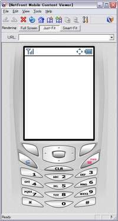
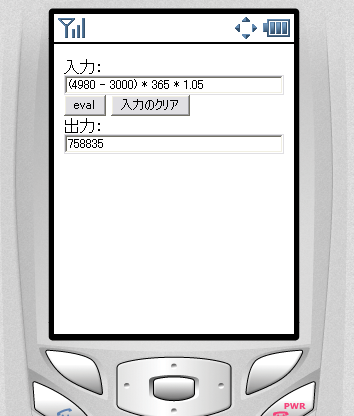
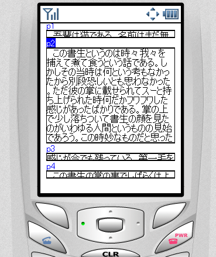

株式会社 アイプランニング
Towa Edogawabashi building 8F
Yamabuki-cho 347
Shinjuku-ku Tokyo
Phone: 03-5225-1147
NetFrontとは、ACCESS社が開発した組み込み機器用ブラウザです。携帯電話、PDA、ゲーム機など、さまざまな機器で採用されています。
中でもモバイルガジェットが動作する携帯電話の標準ウェブブラウザとして大きなシェアを持つことも予想されています。
§１．NetFront3.x
NetFront3.4でAjaxに対応、NetFront3.5ではAjaxによるWidget機能が追加される予定です。
・ITmediaの記事
・Impressの記事
今後、Webアプリケーションプラットフォーム（特に携帯ガジェット）としても成長していくことが期待されています。
今回は、やや古いバージョンになりますが、エミュレーション環境(NetFront Mobile Content Viewer)のあるNetFront3.2でJavaScript開発を行ってみました。
§２．NetFront Mobile Content Viewerについて

ACCESS社提供の公式ビューアです。
こちらからダウンロード可能です。
http://www.jp.access-company.com/products/nf_mobile/contentviewer/index.html
エミュレートできるNetFrontのバージョンは3.2とやや古く、javascriptの機能も限定されています。
使える機能
HTML 4.01、XHTML 1.1
CSS 1 および 2 の一部
ECMAScript 262 3rd
Edition（JavaScript 1.5 相当）
DOM Level 1、Level 2 および Dynamic HTML の一部
SMIL
Basic 2.0、SVG Tiny に準拠
JavaScriptなど使用できる機能の一覧は、以下にあります。
http://support.ezaurus.com/developer/doc/software/netfront3.0_tag_A300.pdf
（Zaurus用NetFront3.0の仕様書）
JavaScriptでページを動的に書き換える方法は以下があります：
・innerHTMLによるノード内書き換え
ただし、タグが含まれていてもプレーンテキストとしてしか表示されません。
・nodeValueによるノード内書き換え
ただしノード自体を追加したり、削除することはできません。
使えない機能
・XMLHttpRequest
Ajaxのような非同期通信はできません。（3.4では使用可能）
・appendChild,createElementのようなDOMツリー操作
「リソースが必要なため」NetFrontでは非対応です。
制約について
以上の仕様により、どこまでできるのか具体的な例をあげますと：
・色や位置、文章の変更などは可能
CSSで指定できるものに関しては、Javascriptによっても変更可能です。
タイマーも使えますので、アニメーションも可能です。
文章は、innerHTMLまたはnodeValueで動的に書き換えることができます。
・要素を生成したり削除するものはできない。
ボタンを増減したり、
ただし、最初に作っておいて、スタイルシートの可視/不可視の切り替えで
生成しているように見せることは可能でしょう。
・外部との動的なデータのやり取りはできない
XMLHttpRequestに対応していないため、
Ajaxのように、サーバとXMLでデータをやり取りすることはできません。（NetFront3.4では使用可能）
§３．計算機の作成例
JavaScriptの機能を直接呼んで計算に使ってみます。
ポイント）eval関数にテキストフィールド内の文字列を渡しているだけです。

JavaScriptの学習にも使えます。携帯端末にJavaScriptが乗っていることの利点は大きいです。
§４．キャラクタアニメーションの作成例
§５．アコーディオンインターフェースの作成例
ページ遷移のないWebインターフェースをJavaScriptで書いてみましょう。
ビューワで見たところです。
該当ページの目次になっているリンクにフォーカスがあたると、段落の高さが変化します。
ポイント）
フォーカスがあたったとき、およびフォーカスが外れたときのイベントは、
<a href=""
onfocus="setPageVisible('rd_01',
true)" onblur="setPageVisible('rd_01', false)">p1</a>
部分で行っています。
ボタン操作の携帯電話に関しては、下ボタンを押すだけでリンクのフォーカスが遷移し、次のページを見ることができるのですが、
タッチパネルをUIに採用した携帯の場合、onclickでトグルさせるほうがいいかもしれません。
NetFront3.5ではタッチパネル操作が強化される予定なので、UIの変化についても考慮する必要があります。
§６．実機(携帯端末)で動かしてみたら(^^;)
動作確認として実機で動かしてみたかったのですが、私の所持している携帯X02HTでは
「NetFront Browser v3.4 for Windows Mobile テクニカルプレビュー版」が
動作しませんでした(^^;)
動作報告(cf. IBLAB 分室)がいくつかあったので、動くかと思っていたのですが、うーん残念です。
動作速度が特に気になるところですが、確かめようがありません。最初にやっておくべきでした。。
というわけで今後はここから再スタートです。動くモバイル端末探しにしばらく奔走。
いずれは、NetFrontを利用してAJAXを用いたモバイルガジェットを作ってみたい。はやく開発環境が整備されないかな。
アイプランニング技術情報
技術情報TOPページ
参考サイト
プログラマ募集中・・・
お客さまの立場に立ってモノが作れる判断力、企画力、コンサルティング能力を磨きたくはありませんか？プログラム能力は、プロジェクトを通じて自然と能力があがるようなシステムになっています。初心者プログラマであっても３年程度で、その能力は初心者だったとは思えないくらいのスキルとなっています。
これは、「最初は誰でも初心者だ」という教育方針があるため、また、多くの社員が入社して初めてプログラミングにふれたという経験があるために自分のつまづき体験や、成功体験を含めた教育がなされているからなのです。
このようにアイプランニングでは、社員１人ひとりの個性と人間性を重視し、スキルにあったマンツーマン教育であなたを一人前のエンジニアへと成長させていきます。 それは誠実なスタッフが集まっているからこそ、どんなお客様からも信頼される企業に成長できるから。私たちはそう考えています。
プログラマを目指して会社に入ったものの、思った通りの仕事をさせてもらえなかったと思っている人、教育システムが十分でなかったためにスキルが身に付いていないと思っている人も気軽にご応募ください。パソコンのスキルに自信のない方でも、マンツーマンの研修制度で一人前に成長できるフィールドを整えておりますので安心してご応募くださいね。
知識だけでなく本当の開発力が身につく環境でのシステム開発でみつかる『やりがい』はもちろん、プライベートでも今までになかった充実感が得られますよ。